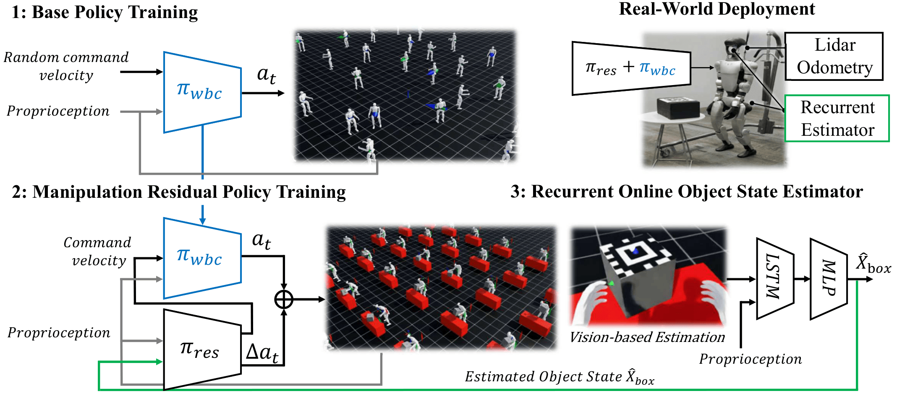

A fully autonomous framework for humanoid robots to perform integrated navigation, object lifting, and delivery.
AdaptManip integrates three core capabilities into a unified autonomous pipeline: navigation to approach the target object, object lifting with adaptive grasp and manipulation control, and delivery to transport the object to a goal location. A recurrent pose estimator provides robust state estimation even under intermittent and noisy vision observations, enabling reliable closed-loop loco-manipulation.

Object Shape Generalization
Mass Variation
Adaptive Regrasp
If you find this work useful, please cite: